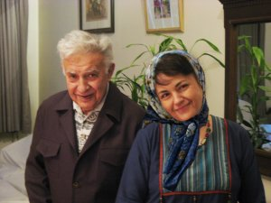

|
|
هاله سحابی هم قربانی خشونت پلیسی شد
چهار شنبه11 خرداد 1390
تغییر برای برابری - فرزندی که قرار بود تشییع کننده پدر باشد خود به همراه پدر رفت. هاله سحابی قرآن پژوه، فعال ملی مذهبی، عضو مادران صلح و از فعالان حوزه زنان قربانی دیگر خشونت پلیسی شد.
هاله سحابی امروز صبح در مراسم تشییع پدر عرت الله سحابی بر اثر حمله قلبی پس از ضرب و شتم حاضرین درگذشت. به گزارش خبرنگار میزان یکی از ماموران به شدت عکسی از مهندس سحابی را که هاله سحابی به سینه خود می فشرد، کشید و بر اثر مقاومت هاله بر زمین افتاد و دیگر بلند نشد.

یحیی شامخی، فرزند هاله سحابی در مصاحبه با میزان این خبر را تایید کرده و گفت: موقعی که پیکر مهندس را برای تشییع بیرون آوردیم ماموران جلوگیری کردند و اجازه تشییع ندادند، جر و بحث شدید شد و فضا متشنج بود. خیلی اذیت کردند و بالاخره جنازه را به زور کشیدند و بردند. نوه مهندس سحابی افزود: جنازه را که به زور کشیدند مادرم افتاد. بی هوش بود، تا پزشکان علت فوت را ایست قلبی اعلام نمودند.
بدین ترتیب فعالان ملی مذهبی و فعالان جنبش زنان یکی دیگر از یاران خود را از دست دادند. هاله سحابی 55 ساله ، پژوهشگر قرانی، فعال جنبش زنان در مادران صلح و از فعالان ملی مذهبی بود. او در 14 مرداد 1388 در تجمع مخالفان مراسم تحلیف محمود احمدینژاد در میدان بهارستان همراه با ضرب و شتم بازداشت و به دو سال حبس محکوم شد. او در حال اجرای حکم بود که برای دیدن پدرش به مرخصی آمده بود.
تغییر برای برابری درگذشت هاله سحابی را به خانواده او، یارانش در جمع مادران صلح، فعالان جنبش زنان و فعالان ملی مذهبی وهمه مبارزان آزادی خواهی و برابری تسلیت می گوید.
یاد و خاطره اش گرامی باد
اخبار مرتبط
نیروهای لباس شخصی با ایجاد تشنج در مراسم ختم عزب سحابی، منجر به مرک دخترش هاله سحابی شدند/ملی مذهبی
شهادت هاله سحابی در مراسم تدفین پدر/نوروز
شهادت هاله سحابی در مراسم تشییع پیکر پدربر اثر ضرب و شتم ماموران امنیتی/سحام نیوز
کشته شدن هاله سحابی در مراسم تشییع جنازه پدرش، عزت الله سحابی/ار اف ای
هاله سحابی بر اثر ضربات باتوم جان باخت/ایران امروز
درگذشت هاله سحابی در مراسم خاکسپاری پدرش/دویچه وله
درگذشت هاله سحابی در پی حمله نیروهای امنیتی به مراسم خاکسپاری پدرش/رادیو زمانه
مرگ هاله سحابی در اثر خشونت و ضرب ماموران بود؛ مقامات نظام باید فورا رسیدگی کنند/جرس
هاله سحابی در مراسم تشییع جنازه پدر از دنیا رفت/تا خانواده برابر